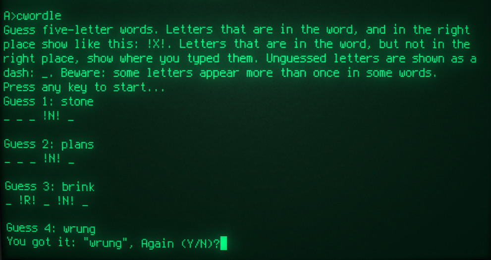

cwordle -- A Wordle-like word-guessing game for CP/M
 Unless you've been on a space mission or a religious retreat for the
last year, you will almost certainly have encountered the
web-based game "Wordle". Essentially, you have to guess five-letter
words, with the program telling you which letters in your guess
are correct and
in the right place, and which are correct but in the wrong place.
It's a simple concept, but surprisingly engaging. It's similar in
many ways to the old number game "bulls and cows", but more accessible.
Unless you've been on a space mission or a religious retreat for the
last year, you will almost certainly have encountered the
web-based game "Wordle". Essentially, you have to guess five-letter
words, with the program telling you which letters in your guess
are correct and
in the right place, and which are correct but in the wrong place.
It's a simple concept, but surprisingly engaging. It's similar in
many ways to the old number game "bulls and cows", but more accessible.
But how will you get your Wordle fix if all the modern computers in the world have strangely vanished, leaving nothing made since 1980? That's obvious -- play Wordle on CP/M.
Implementation
There's no doubt that this program could be implemented in a very compact format in assembly language. However, because it's not important enough to spend many hours on it, I wrote it mostly in C. Some parts are in assembly, particular the console I/O and random number generation (more on this latter subject later). The Manx Aztec compiler I use for this kind of C development doesn't do console I/O very efficiently -- it works fine, but it includes an awful lot of unnecessary library code. I've replaced all this with simple BDOS calls.
As a matter of principle, I build my CP/M programs using CP/M tools. However, in practice I run the build on a Linux machine using a CP/M emulator, just because it's so much quicker than using real hardware.
Word list
The word list for the Linux spell utility provides a convenient source of words. It's easy to use command-line tools to randomize them and select a specific number. There are about five thousand, five-letter words in this list, but cutting it down to 4096 (212) makes the programming easier. Quite a few of these 4096 words are rather obscure, but that just adds to the challenge.
Random number generation
The Aztec C compiler doesn't include any random number facilities, but it's easy enough to implement a 16-bit XOR-and-rotate pseudo-random generator in assembly language. Or in C, for that matter; but doing it in C generates about 600 bytes of code, rather than 20 bytes in assembly.
The problem is not generating pseudo-random numbers as such -- the problem is seeding the number generator with some source of entropy. A conventional way to do this in modern systems is to use some digits from the real-time clock, but CP/M systems don't have a real-time clock -- not one with a standard API, anyway.
It was common on the Z80 CPU to use the R register as a source of entropy. This register was used for timing updates to dynamic RAM. However, as R is only an 8-bit register, it doesn't provide a way to select randomly from 212 words. So I've fallen back on the old trick of a having a "Press any key..." message on start-up, and timing how long the user waits to press a key. Even at Z80 speeds, tens of thousands of CPU cycles will elapse in the time it takes for the user to press a key, so this works reasonably well in my tests on real hardware. I could add some extra entropy using the R register, but this would limit the program to Z80 systems, and I didn't want to do this when the rest of the program works fine on the 8080.
In action
The screenshot below shows the cwordle game in
action.

Downloads
Source code and binaries (for 8080/Z80 CP/M) are available from my GitHub repository.
Closing remarks
Games of this sort are ideally suited to CP/M systems. They can be
played using only a line-based terminal, as they need no graphics. They don't
require a large amount of memory, or huge CPU power. There's no doubt
the game could be improved -- if there was any interest -- by
using screen-based features of terminals. For example, the different
guess results (right place, wrong place, wrong) could be highlighted
in different, more visible ways. I could maintain a list of which
letters had been discovered to be definitely in, or not in, the secret
word, on some other part of the screen. As it stands, cwordle
could be played using a teleprinter.